С самого детства меня увлекало все, что можно сделать собственными руками. Помню, как с восторгом
посещала кружки, где изучала основы рукоделия, пробовала модульное оригами и осваивала искусство
бисероплетения. Эти занятия были для меня чем-то волшебным – каждый раз ощущала, что создаю
маленькое чудо. Интерес к этому живет во мне и сегодня: сейчас я вяжу плюшевые игрушки амигуруми.
Эти маленькие мягкие создания вызывают искренние улыбки и радость у всех, кто их получает, ведь каждый
связан с теплом и заботой.
Мои любимые игрушки
Здесь я покажу свои самые милые и любимые творения! Все свои игрушки я люблю одинаково
я вкладываю в них многое, самое главное, свою душу. У меня есть страничка в instagramm,
где я показываю всех этих плюшевых милашей.
Кроме рукоделия, я обожаю готовить, особенно выпечку. Сладкое – моя слабость, а создавать что-то вкусное
для меня и любимое занятие, и ответственное задание на семейных праздниках. На мне всегда лежит «сладкая
ответственность», и каждый пирог или торт – это не просто угощение, а частичка любви, вложенная в каждую
крошку.
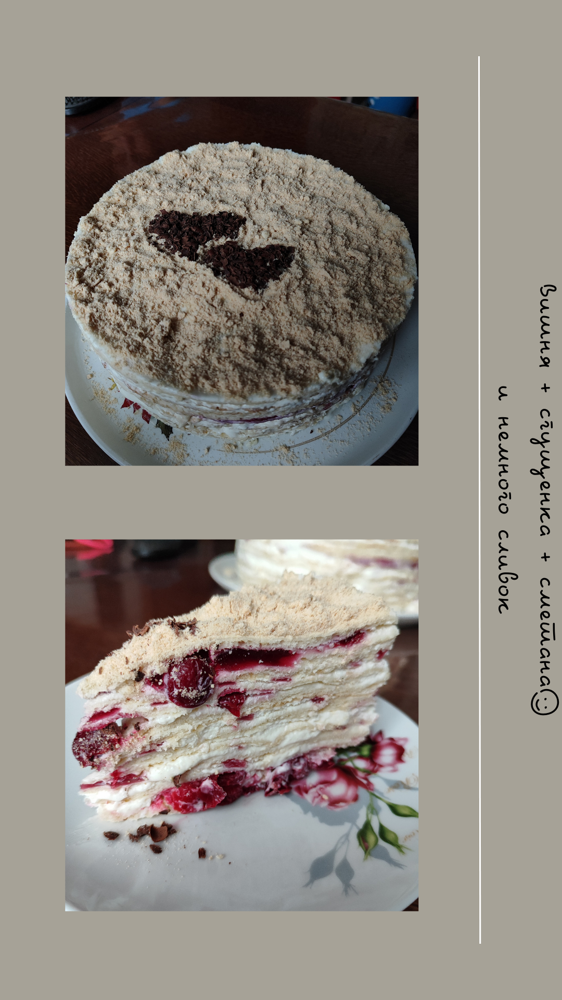
Летний закат в объективе
Я выросла в деревне, где леса и поля создают удивительные пейзажи, и особенно красивые – летом. Закаты в
моей родной деревушке невозможно забыть: багряное и золотое солнце, садящееся за горизонт, оставляет
волшебные краски на небе. Телефонная галерея полна фотографий этих моментов, хотя снимки, увы, не способны
передать всей их завораживающей красоты.
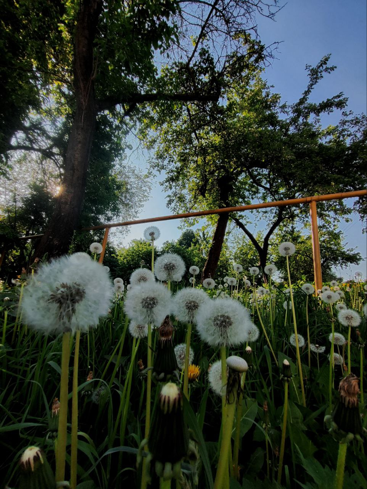
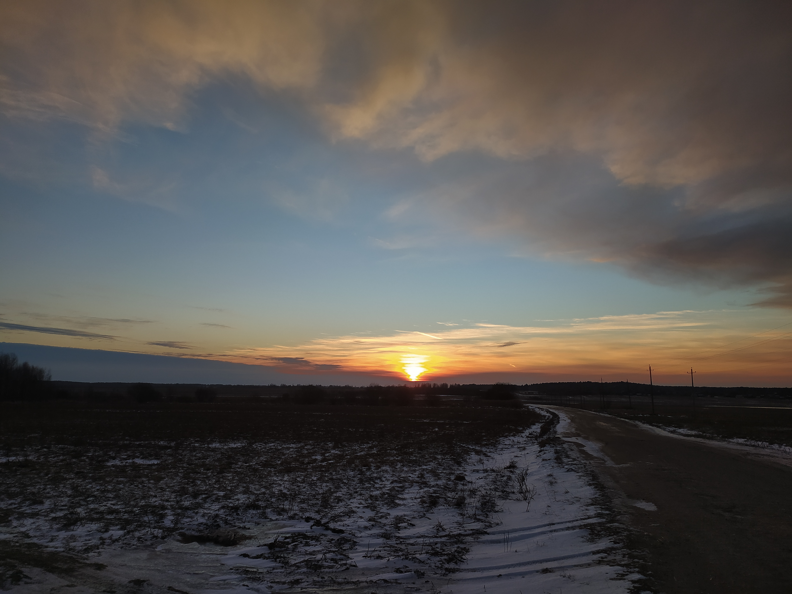
В ритме спорта
Активные игры и спорт также всегда были моей стихией. В школьные годы я играла в волейбольной команде, а
сейчас продолжаю традицию, увлекаясь настольным теннисом. Мне нравится поддерживать энергию в движении и
в спортивных играх.
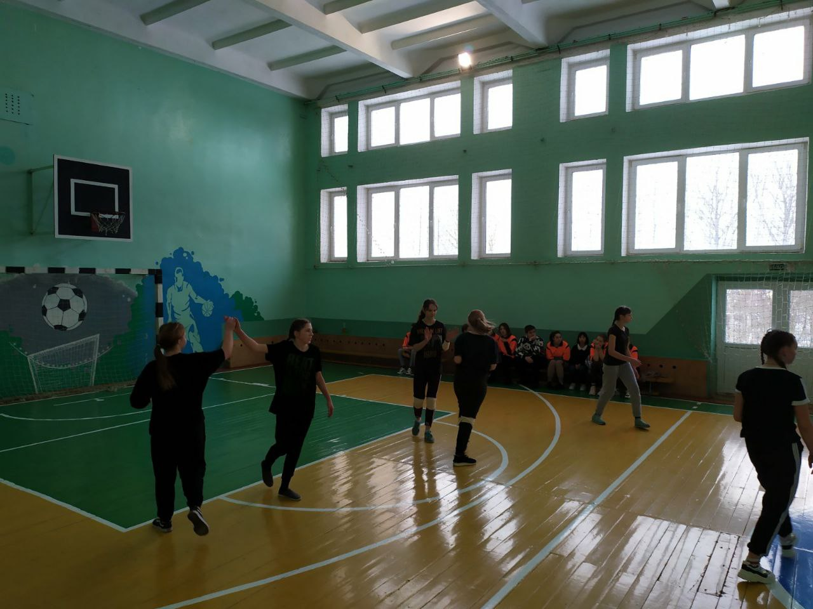
Вокруг Беларуси
Ежегодно я и мама устраиваем путешествия по нашей удивительной Беларуси. Это наша особая традиция –
каждое лето отправляться в новый уголок страны, чтобы узнать что-то новое, насладиться природой и укрепить
нашу связь. Эти поездки делают нас ближе и оставляют яркие воспоминания, которыми я дорожу.
Полоцк
Брест
Гродно
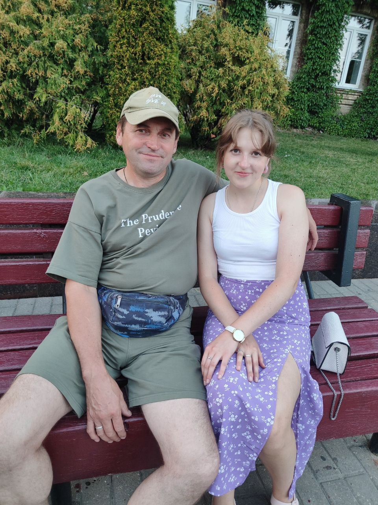
В семейном кругу
Я очень люблю проводить время с семьей. Она мне дает силы и уверенность в себе, она моя поддержка.


 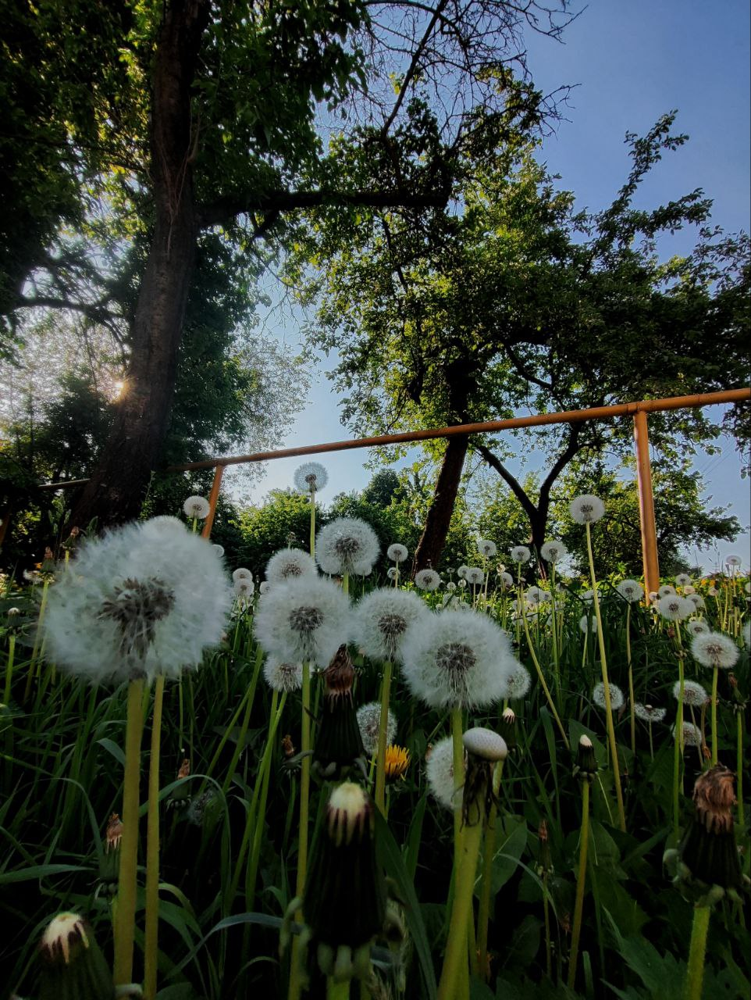
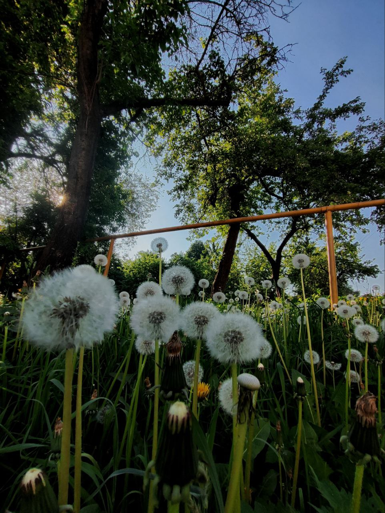

 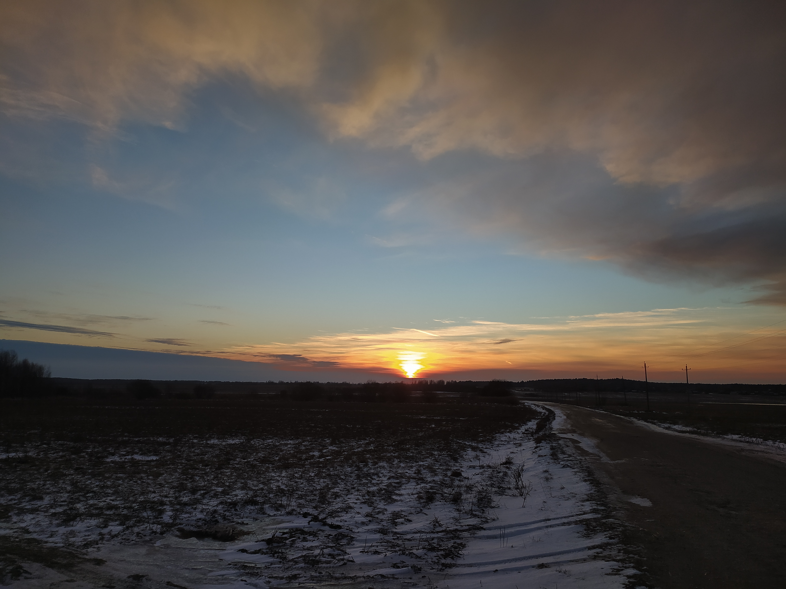
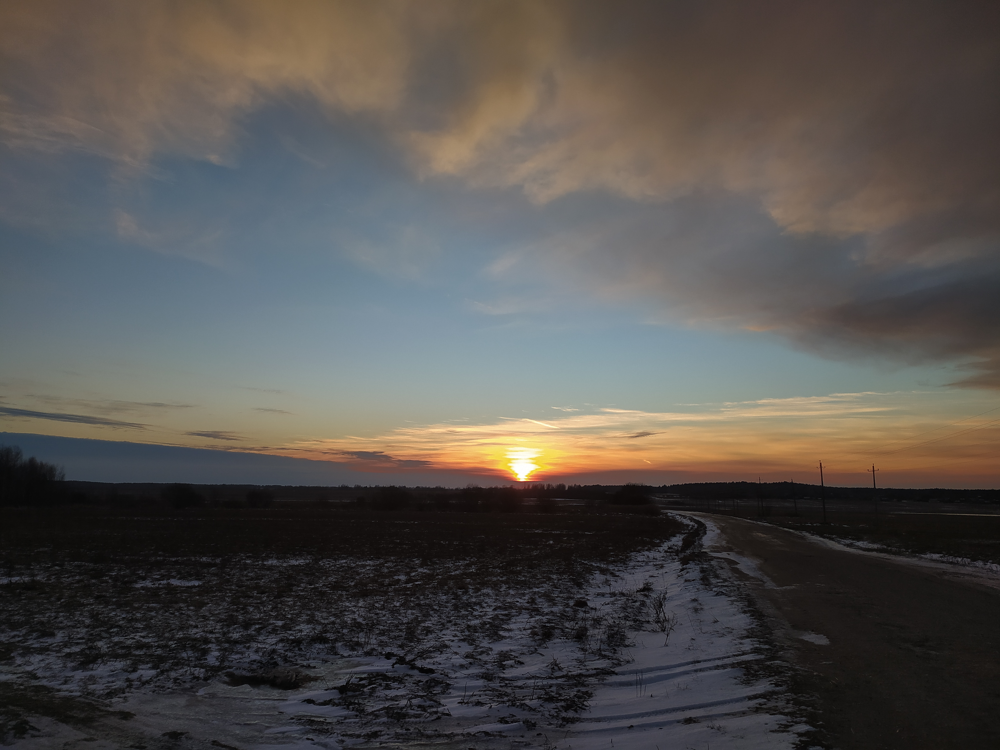


 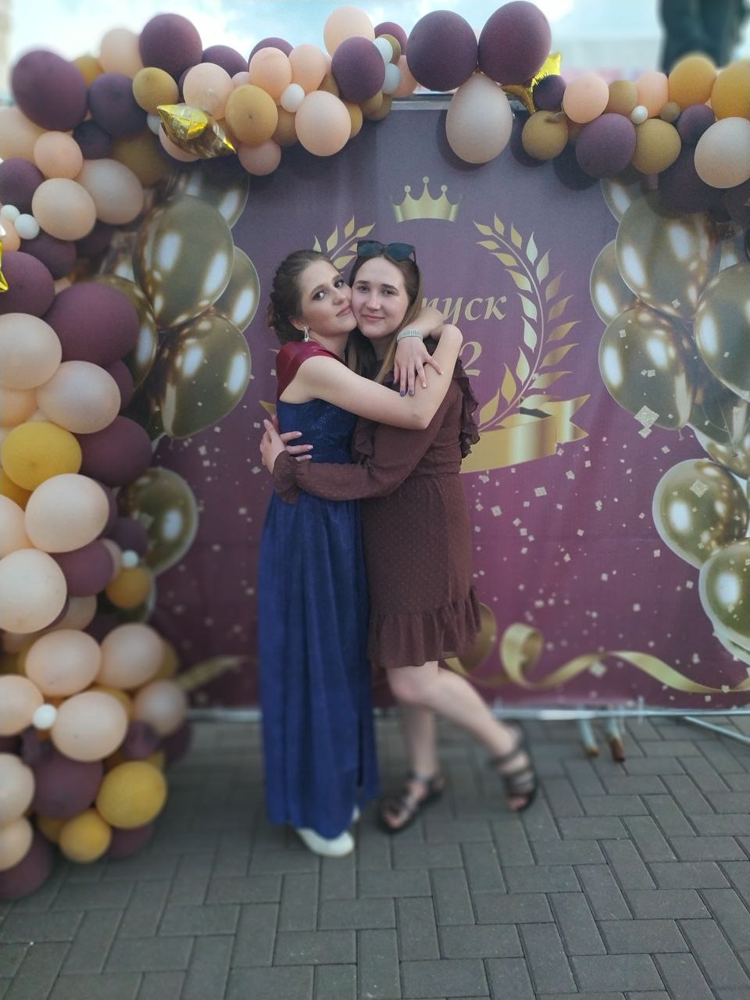
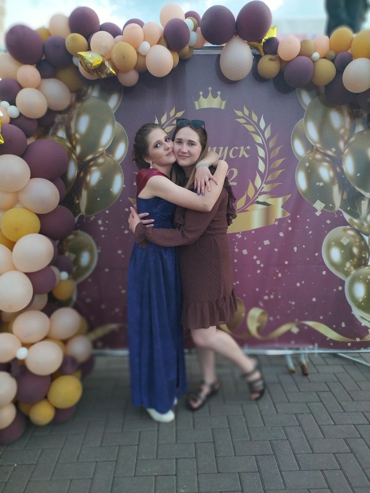